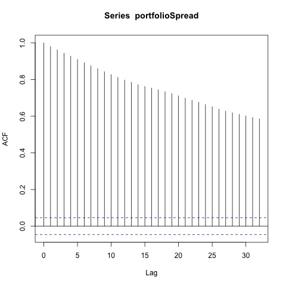
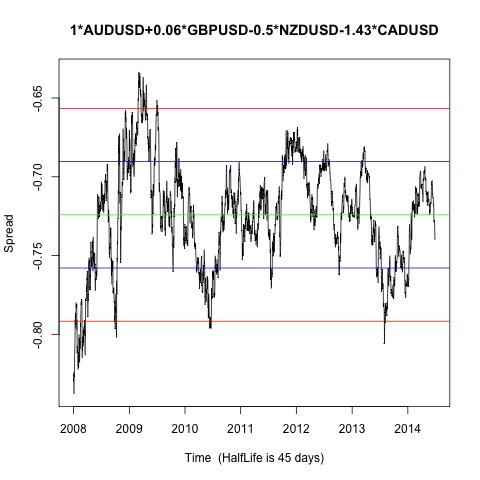

Johansen-Procedure "" "10pct" "5pct" "1pct" "r <= 3 |" 1.57 7.52 9.24 12.97 "r <= 2 |" 6.5 17.85 19.96 24.6 "r <= 1 |" 20.21 32 34.91 41.07 "r = 0 |" 50.06 49.65 53.12 60.16 "AUDUSD.l2" "GBPUSD.l2" "NZDUSD.l2" "CADUSD.l2" "constant" "AUDUSD.l2" 1 1 1 1 1 "GBPUSD.l2" 0.06 4.24 0.2 -0.19 0.08 "NZDUSD.l2" -0.5 -2.9 0.1 -1.73 -2.53 "CADUSD.l2" -1.43 -1.32 -1.02 1.27 1.77 "constant" 0.72 -4.22 -0.35 -0.42 -0.95
Augmented Dickey-Fuller Test p-value 0.0162084652414956 